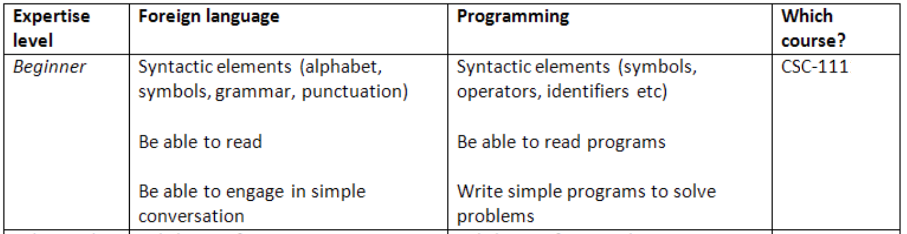
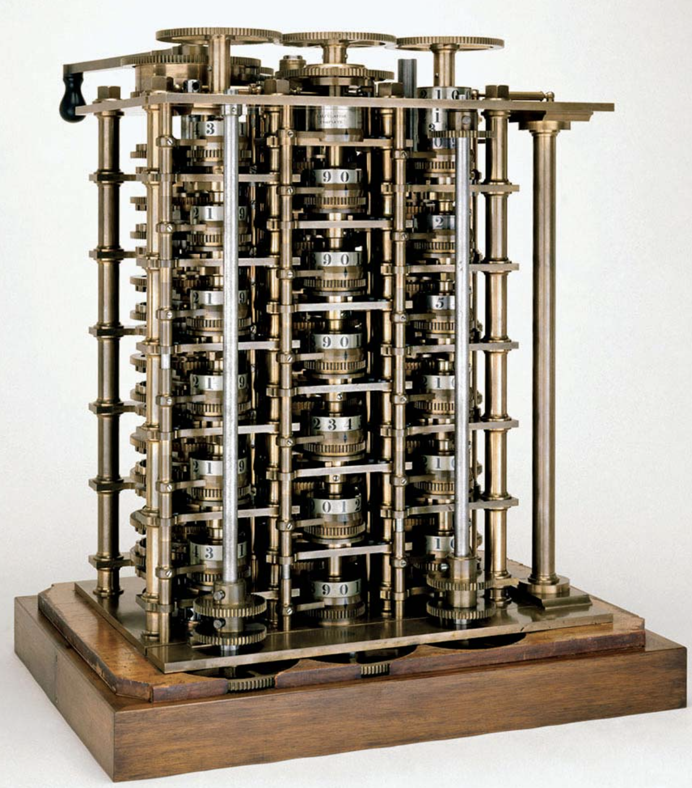
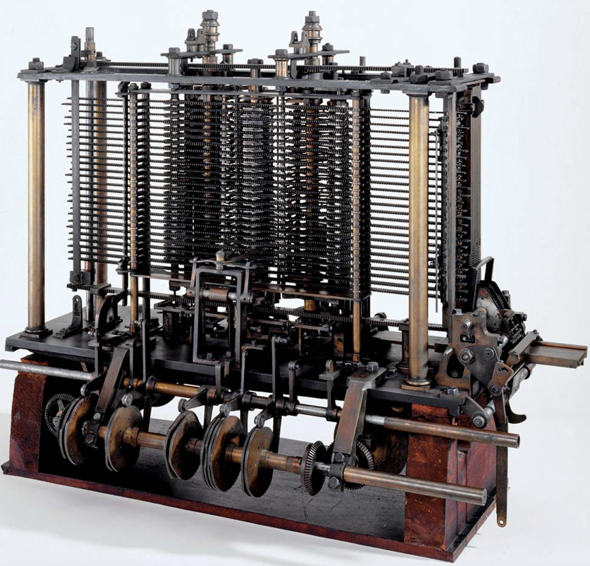
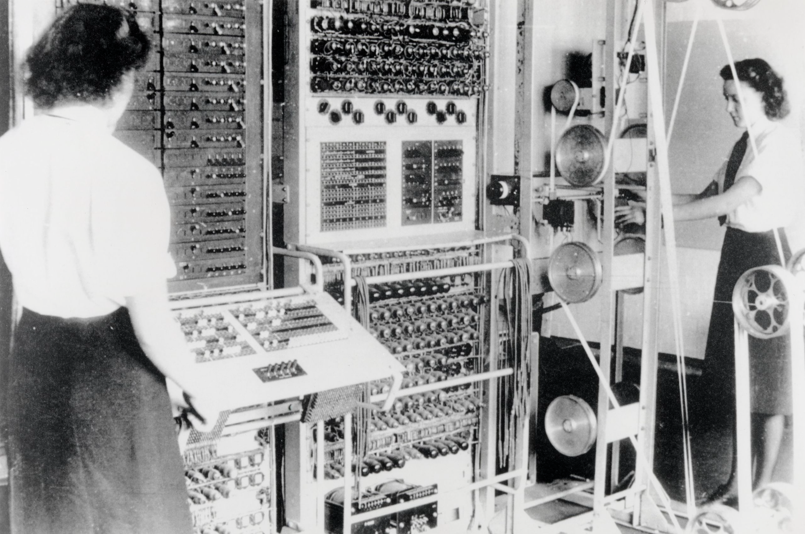
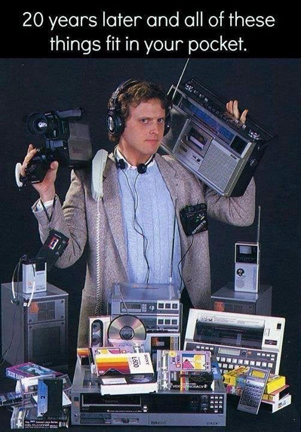
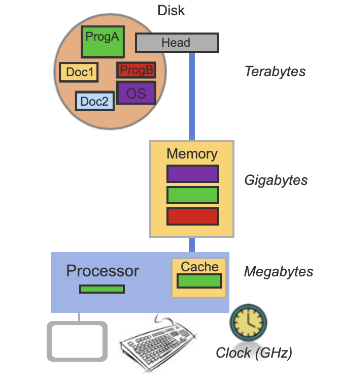
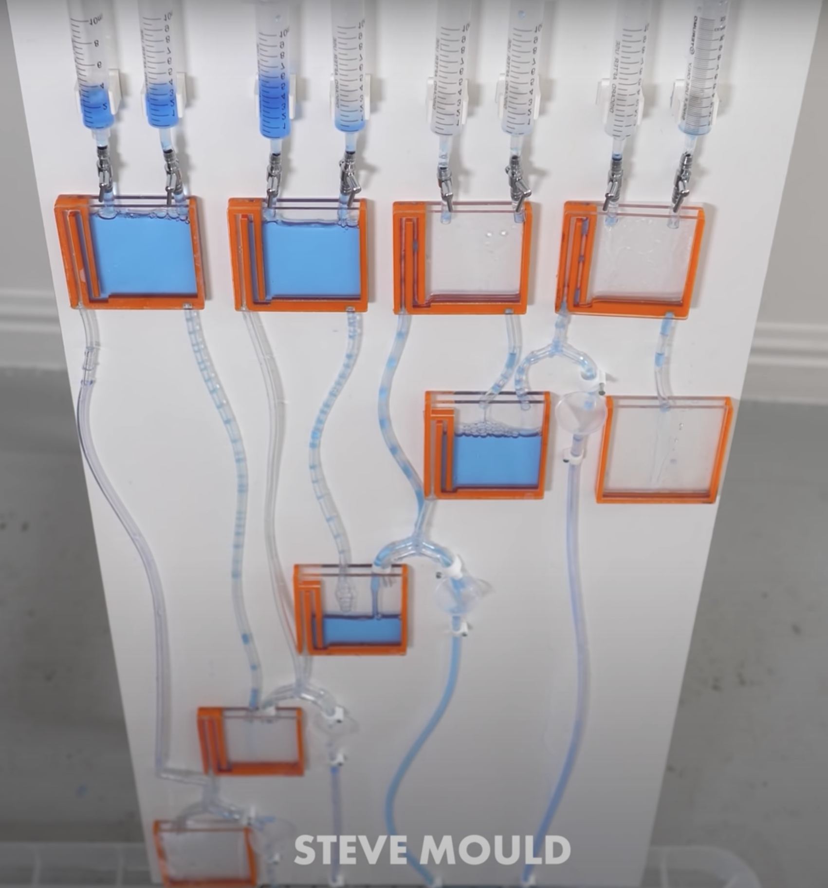
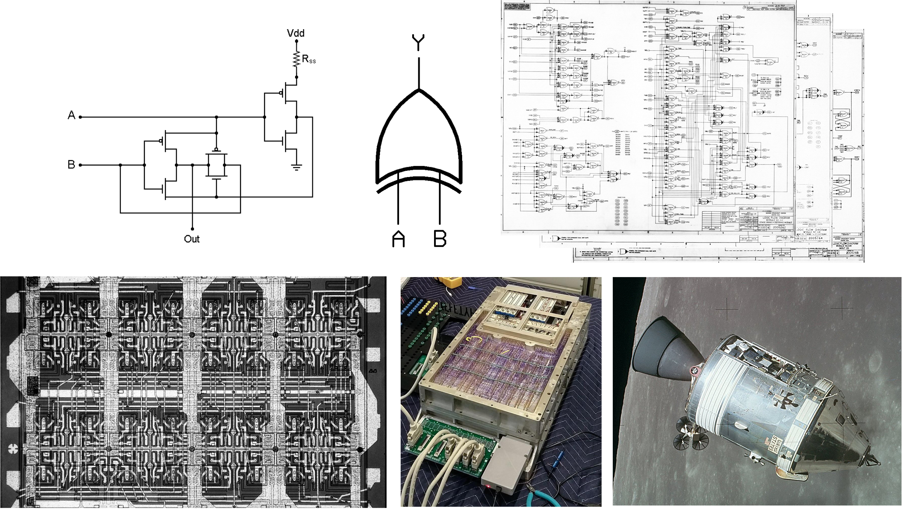
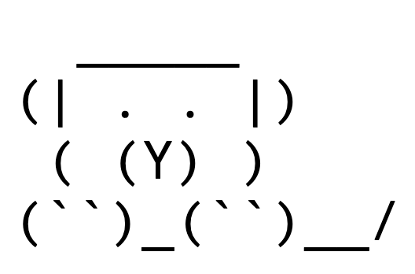

Lecture Notes 02: How Computers Work
The Abstraction Ladder and The Black Box
The essence of abstractions is preserving information that is relevant in a given context, and forgetting information that is irrelevant in that context.
Abstraction is what allow us to have conversations without specifying absurd levels of detail.
Think about how you order a Pizza:
Example 1: Think about how you order a Pizza:
- Call the pizza place
- Ask for a menu Item (pepperoni pizza)
- Give address and pay information
- Hang up
This is a very high-level of abstraction in which the context is clear to both parties and you both already know what every key word means.
It is high-level because the details are not needed, only the context.
Activity 1 [1 minute]: If you were teaching an alien (that has never even heard of what a pizza is) to make a pepperoni pizza from scratch, What would you say?
You can assume the alien speaks English and all the ingredients are there and they are labeled and identifiable
One possible answer:
(Wait; then Click)
- Place 4 cups of bread flour, 1 teaspoon of sugar, 1 envelope of yeast, and 2 teaspoons of salt in the bowl of a stand mixer.
- Mix, adding 1.5 cups of water and 2 tablespoons of olive oil and beat until the dough forms into a ball.
- ETC (you get where this is going)
This is a very low-level of abstraction in which the context is not used (much) and great detail is needed to make progress.
Ways to learn: The Black-Box approach
Using a module as a black box is like saying:
"I don't care how it works, I only need to know what I need to give it and what it gives me in return."

-
We will use the computer in this way;
-
We will also learn Python in this way: We will show working examples and explain what the structure does but we will not delve into the how it does it (that is at a future course).
Once the "High-Level" is understood, we can look inside the box to see more details.
This is called a "top-down" approach.
Ways to learn: The trees-to-forest approach
Another way we'll learn will be to look at lots of patterns and examples and then to "generalize" what we see to try to find a "rule" that encompasses the examples.
We can call this approach: "the bottom-up approach".
Is this a language course?
We'll make a rough analogy with learning a foreign language: CS111 is the equivalent of a beginner language course.

-
It might not be enough to write a great Spanish-language novel, but it is enough to be able to go on a trip to a country that speaks Spanish and do OK.
-
You might even be able to read a bit of French, Italian, Portuguese, ... any Romance-Language.
In terms of Programming languages, this means that you'll be able to get practical things done and understand other programs written in Python; you will also be able to read and understand a whole lot of
similar languages like C, C++, Java, etc.
However, there is a big difference between languages like English or Spanish and programming languages!
why do you think that is?
Now, a quick
high-level look at the inside of the black box.
The Original Computers
The term computer refers to a mechanism or agent that aids in the completion of a computation (AKA a calculation).
These are some examples of those agents:
Abacus

Activity 2 [1 minute]: In the rightmost picture, where is the "original computer" located?
The modern term Computer refers to a mechanism that "performs calculations" automatically and that can be programmed.
Let's look at these terms one by one:
-
Automatic: refers to action independent of (human) intervention in order to perform its calculations.
-
Programmable: a system whose starting conditions and rules of execution can be predefined and assigned prior to execution.
-
Antikythera Mechanism, built around 100 BC, was a mechanical astronomical clock.

-
Cosmic Engine was built by Su Song in 1092 and was a hydro-mechanical astronomical clock tower;

-
The Difference Engine, built by Charles Babbage in 1819 was a programmable calculator. It was "automatic" in that it could perform the calculations without intervention as long as someone provided power (hand-cranked).

-
Babbage theorized a more general machine that could be programmable and could do many more things. This was called the Analytical Engine (which has not yet been built as described by Babbage).

-
Ada Lovelace, who worked with Babbage, published the first computer algorithm and is commonly referred to as the first computer programmer.

-
Analog mechanical computers (late 1800's) were built to solve equations to predict all sorts of things

-
Electromechanical calculators (early 1900's).

-
Z3 (1941) first electromechanical programmable, fully automatic digital computer.

-
Several electromechanical computers built during WW2 to crack codes. Colossus (1943) was the first electronic digital programmable computer. "Programs" were defined by the states of its patch cables and switches.

-
After WW2, we see an explosion in computing speed, memory capacity, and programming complexity.
The electronic stored program (see Manchester Baby) became a "thing".
An important component is the "transistor" (more on this later) was invented in 1947.
It allowed the construction of smaller, faster, and more efficient computers: Moore's law postulated that the number of transistors that can be packed into a given unit of space will double about every two years.
Effect... look in your pocket or wrist.

(this is from the late 80's or early 90's!)
Activity 3 [4 minutes]: Using these definitions and notes, we can ask the questions:
- Is an abacus a computer?
- Is a calculator a computer?
- Are one or more human "computers" computers?
- Can we build a computer using dominoes (wait to click)?
- Can we build a computer using water (wait to click)?
What are the parts of a Computer?

Parts:
- a modern computer has a processor (brain), also know as the Central Processing Unit (CPU);
- a long term storage location (disk);
- and a couple faster short term storage locations (memory and cache)
- It also has "peripherals" for input (keyboard, mouse), and output (monitor, speakers)
Operation:
- The disk has sectors were data is remains stored even when powering down the computer.
- The memory and the cache are volatile memory; they are faster but the data is lost when powered down.
The cache is faster but smaller than the main memory.
-
The processor follows programs to cause all its parts to function according to some plan:
- It can try to read information from its cache;
- If it does not find the data there, it looks in main memory;
- If it does not find it there, it reads data from disk into memory and searches memory again;
-
The processor also reads data from peripherals (like the keyboard) and can write to them (like a monitor)
CPU vs GPU
There are different types of processors;
The CPU is versatile (can run many different operations) at a relatively fast rate.
- A CPU can interpret instructions and send signals to other parts.
- It can read (or write) data from (to) memory
- It can store small quantities of information that it can access incredibly fast
- It can solve arithmetic or logical problems using its Arithmetic-Logic-Unit (ALU)
A
GPU (a Graphics Processing Unit) is a massively simplified CPU that can run
many simple operations at the same time (in parallel). This makes it very fast.
CPUs are good for running general tasks in a computer.
GPUs are good for running simple operations to solve similar problems like for graphics.
Let's look at the logic used by a modern computer to function;
this time from a Low-level to High-level of abstraction.
From gears to 0's and 1's, and up to a High-Level Language
How do we compute something automatically?
We could use
Gears & levers but as we discussed, that is problematic (slow and inaccurate).
It turns out that using a fast flowing current is a pretty good approach!
- It is energy-efficient
- It is easy to move around
- It is versatile and hard to "damage"
A computer works like a water-pipe system with a gazillion valves. The water (electricity) courses through the system and activates sprinklers, flotation devices, etc, depending on how the valves are set.

However,
How do we "store information" using some sort of flowing current?
Activity 4 [2 minute]: How do we store information in a "computer" that uses flowing current to function?
One possible answer:
(Wait; then Click)
The minimum thing we can know about a thing is: Is it there or not?.
To represent this with a flowing current, we can say:
- If it is flowing in this section (pipe): then YES or TRUE
- If it is NOT flowing in this section (pipe): then NO or FALSE
Anything that has two parts or two sides is called binary, so this piece of information is called a binary datum (a single piece of data), which could be represented with any two symbols:
- No/Yes
- False/True
- OFF/ON
- \( \bullet\) / \(\boldsymbol{-}\)
- 0/1
The term bit is derived from binary digit, a logical state (relation between a proposition and the truth) with one of two values.
It is common to represent these with \( 0 \) and \( 1 \), but as you can see below, we can use another approach (OFF/ON) with the same results.
IF we can assign a set of steps to be followed by our system, which will run automatically when executed, we've got a computer!
The Transistor
A transistor is an electronics component that lets electricity pass through from one of its input pins (collector) to one of its output pins (emitter) if there is an input on the third signal pin (base).

The brilliance here is that this allows an electric signal (that can be programmed) to control another electric signal; making the electric component capable of self-guidance.
The transistor works like that:
- if there is no signal into the base, then current does not flow from collector to emitter;
- if there IS a signal into the base, then current flows from the collector into the emitter (and one can use that current to do other things);
Check an
animation that explains how a transistor works by using the water analogy.
These components can be arranged together together with other valve-like components to make more and more complex modules that can be integrated into a full computer.

A Program
A (modern computer) program, in its most basic form, is a list of control signals that tell the computer when to let electricity pass and where to.
The lowest form of these control signals therefore depend on two symbols:
A list of control signals written in 0a and 1s is called
Machine Code.
Since we can write numbers using only 0's and 1's, these can be called binary (from "two") digits (symbols representing numbers), or
bits.
Binary
There are many different ways of representing numbers:
Note that decimal is a positional system with the symbols: 0, 1, 2, 3, 4, 5, 6, 7, 8, and 9;
the number is constructed by indicating "how many times we need each power of 10" (that's what base 10 means):
\[ 1729 = 1*10^3 + 7*10^2 + 2*10^1 + 9*10^0 = 1000 + 700 + 20 + 9 \]
The binary system is a positional number system with two symbols: 0 and 1;
the number is constructed by indicating "how many times we need each power of 2" (that's why base 2) using only the valid symbols:
\[ 11011000001 = 1*2^{10} + 1*2^9 + 0*2^8 + 1*2^7 + 1*2^6 + 0*2^5 + 0*2^4 + 0*2^3 + 0*2^2 + 0*2^1 + 1*2^0 \]
\[ = 1024 + 512 + 0 + 128 + 64 + 0 + 0 + 0 + 0 + 0 + 1 = 1729\]
The first 8 natural numbers (starting at 0) are:
| decimal |
binary |
| 0 |
000 |
| 1 |
001 |
| 2 |
010 |
| 3 |
011 |
| 4 |
100 |
| 5 |
101 |
| 6 |
110 |
| 7 |
111 |
Notation: To indicate that we're writing a binary number, we usually
prepend "0b" to the number, so the binary number:
101010 should be written
0b101010 to distinguish it from "one hundred and one thousand and ten".
Activity 5 [3 minutes]:
Translate your birthday to binary.
example: 02/29/2020 (Yak's birthday) would be 0b10/0b11101/0b11111100100
hint: try dividing by the maximum power of 2 you can fit. Then continue with the remainder.
The last useful positional system we'll use in this class is
hexadecimal.
The
hexadecimal (or
hex) system is a positional number system with 16 symbols: 0-9 plus a, b, c, d, e, and f;
the number is constructed by indicating "how many times we need each power of 16" (that's why base 16) using only the valid symbols.
\[ 6C1 = 6*16^2 + C*16^1 + 1*16^0 = 6*16^2 + (12)*16^1 + 1*16^0 = 1536 + 192 + 1 = 1729\]
Notation: To indicate that we're writing a hex number, we usually
prepend "0x" to the number, so the hex number:
1234 should be written
0x1234 to distinguish it from "one thousand, two hundred and thirty four".
Activity 6 [Group; 3 minutes]:
Translate this number to hex: 3735928559
hint: try dividing by the maximum power of 16 you can fit. Then continue with the remainder.
In case we only get to here...Before next class (Friday)
[Due for everyone] Complete ZyBook Assignment 02 (chapters 1.4 - 1.5 and 1.11 - 1.13)
Note: 1.4.1 is complex, but don't worry, you are only supposed to tinker with it, not understand the whole thing.
[Optional] ZyBook chapter 1.10; Try to make the following shape using exercise 1.10.3:
